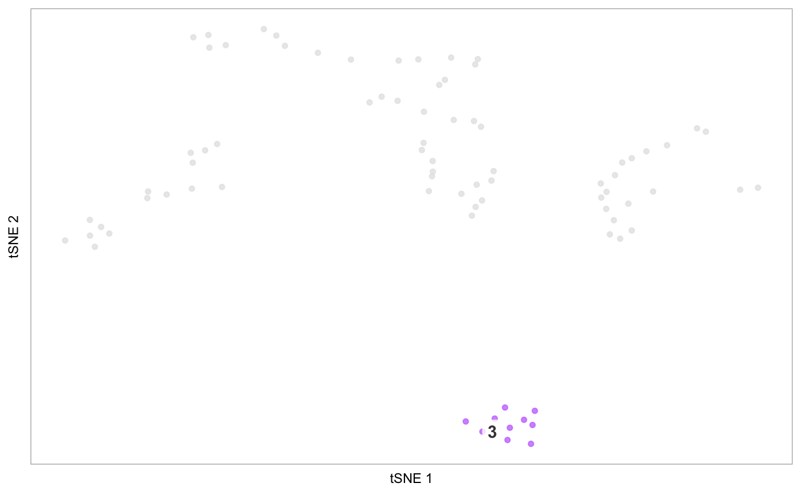
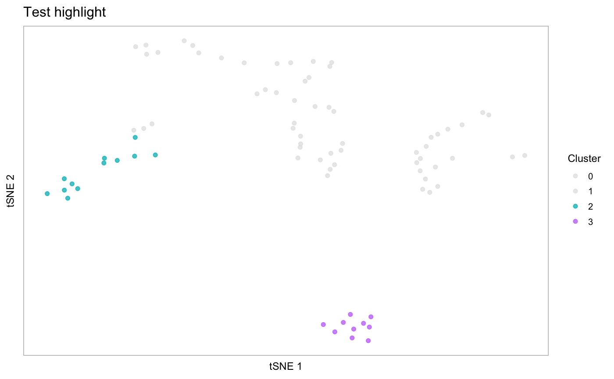
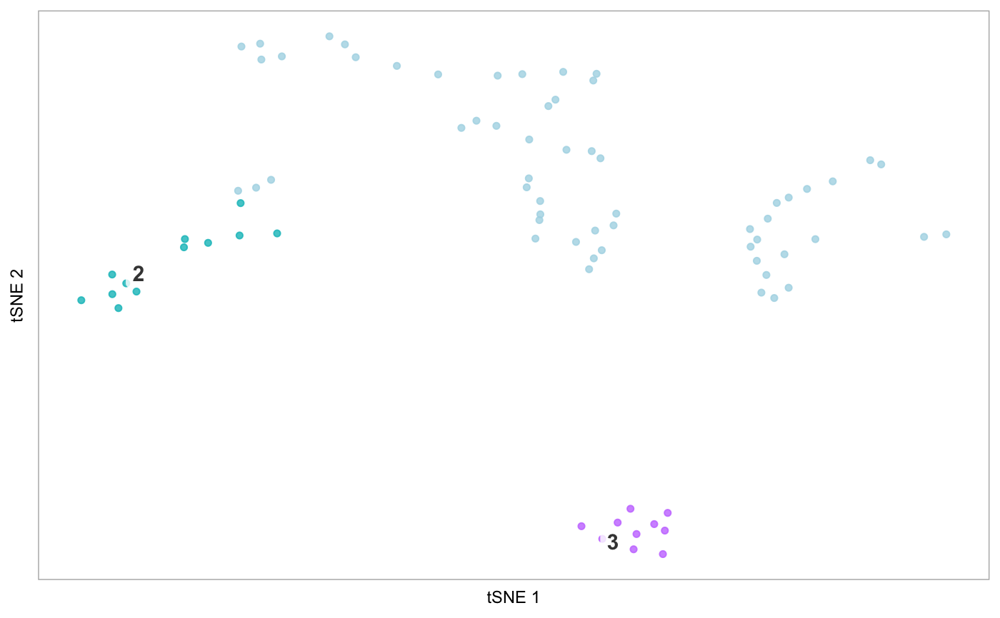
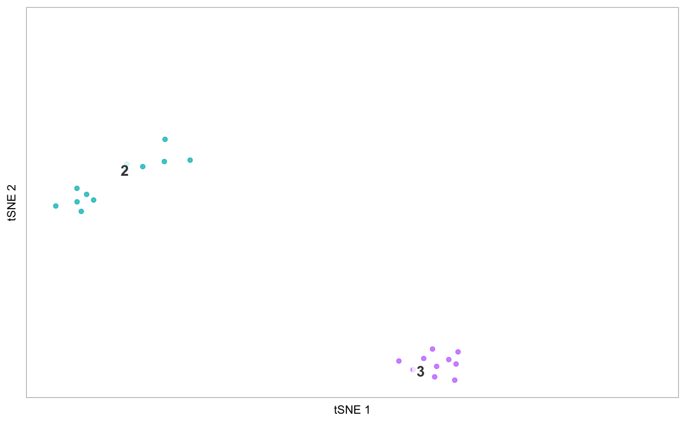

Plot the embedding for the dataset, with cells from select clusters coloured
by either their original colours or provided colours, and cells from all
other clusters in another (non-intrusive) colour, or not at all. This is a
thin wrapper for tsne which takes care of specifying cells and colours
in order to highlight the desired clusters.
highlight(seurat, clusters = NULL, cells = NULL, reduction = "tsne",
original_colours = NULL, default_colour = "gray90",
label_all = FALSE, label = TRUE, ...)
Arguments
| seurat |
Seurat object, where Seurat::RunTSNE() has been applied |
| clusters |
Vector of one or more clusters to highlight, matching the levels at
levels(seurat@ident). If "none", all clusters are coloured by default_colour. |
| cells |
Character vector of cell IDs specifying cells to highlight. |
| original_colours |
(Optional) Vector of colours to use. Either one colour
per cluster, in the order of levels(seurat@ident), or one colour per
cluster passed to clusters, in the other they were provided.
Default: default ggplot2 colours used by Seurat. |
| default_colour |
String, colour to use for non-highlighted clusters, or
"none", if cells in those clusters should not be plot at all. Default: gray80
(light grey). |
| label_all |
Logical, if labelling the tSNE (if label == TRUE), whether
to label all the clusters, or only the ones being highlighted. Default: FALSE. |
| ... |
Arguments passed on to plot_dr
- reduction
String, specifying a lot of seurat@dr, which
indicates which embedding to plot. Default: "tsne". (Can also take "umap" or "pca"). - colour_by
(Optional) String, specifying the column in seurat@meta.data
by which to colour cells. Default: NULL, colour cells by cluster (in seurat@ident). - colour_by_type
(Optional) String, one of "discrete" or "continuous".
If specifying colour_by and providing colours to the colours
argument, specify whether the colour_by variable is discrete or continuous.
Default: discrete. The function is pretty good at setting the palette correctly on
its own, but try modifying this in case of errors. - point_size
Numeric, size of points in scatter plot. Default: 0.6 for datasets
with < 300 cells, and 1.3 for datasets with otherwise. - alpha
Numeric, fixed alpha value for points: Default: 0.8 - legend
Logical, whether to plot legend. Default: FALSE if colour_by
is NULL and label is TRUE, true otherwise. - label_repel
Logical, if label is TRUE, whether to plot cluster
labels repelled from the center, on a slightly transparent white background and
with an arrow pointing to the cluster center. If FALSE, simply plot the
cluster label at the cluster center. Default: TRUE. - label_size
Numeric, controls the size of text labels. Default: 4. - title
(Optional) String specifying title. - hide_ticks
Logical, whether to hide axis ticks, i.e. both the text and the
small lines indicating the breaks along the x- and y-axes. Default: FALSE - hide_axes
Logical, whether to hide axis labels. Default: TRUE - label_short
(Optional/Experimental!!) Logical, if TRUE, assumes cluster
names (at seurat@ident) consist of a prefix and a suffix separated by a non-alpha
numeric character ("[^[:alnum:]]+"), and tries to separate these names
and only plot the prefix, for shorter labels and a cleaner plot. Default: FALSE. - cells
Character vector of cell names if only a subset of cells should be
plot (these should correspond to seurat@cell.names). Default: Plot all cells.
See the argument clusters_to_label for only labelling certain clusters.
See the constrain_scale argument for controlling the scales of the plot.
See highlight for more options for plotting specific cells. - order_by
String, corresponding to a column in seurat@meta.data, specifying
a variable to control the order in which cells are plot. (Thus, you can manually
specify the order, add it as a new column in seurat@meta.data, and pass that).
If numeric, cells with high values are plot on top. If not, the column must
be a factor, and cells will be ordered according to the levels, with cells
in the first level plot on top. Default: if a numeric column is specified
to colour_by, sort by that variable, otherwise, use the ordering of the cells
in the Seurat object. - na_color
String, specifying the colour (built-in or hex code) to use to
plot points which have an NA value, for example
in the variable specified in colour_by. Default: light gray ("gray80),
change to "white" to purposely hide those cells. If you do not want to plot
certain cells at all, pass names of cells to plot to the cells argument. - limits
Numeric vector of length two providing the lower and upper limits of
the colour scale, if colouring by a continuous variable. Default: min and max
of the values the variable takes on in the data. - constrain_scale
Logical, if plotting a subset of cells, whether to
use the limits of the tSNE embedding computed on the whole dataset (useful
for constraining scales across plots while only plotting specific cells).
Default: TRUE - dim1
Numeric, dimension of embedding to use for x-axis. Default = 1. - dim2
Numeric, dimension of embedding to use for y-axis. Default = 2. |
Value
A ggplot2 object
Examples
# Highlight cluster 3 on the tSNE plot
highlight(pbmc, 3)



